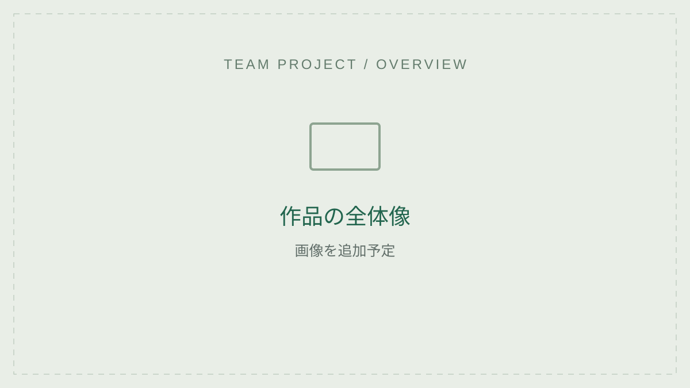
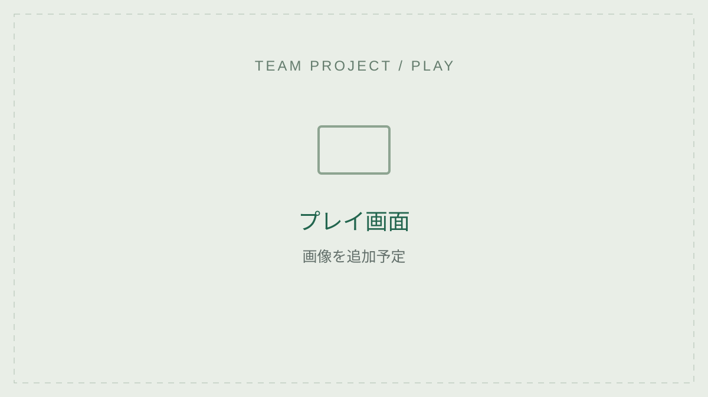
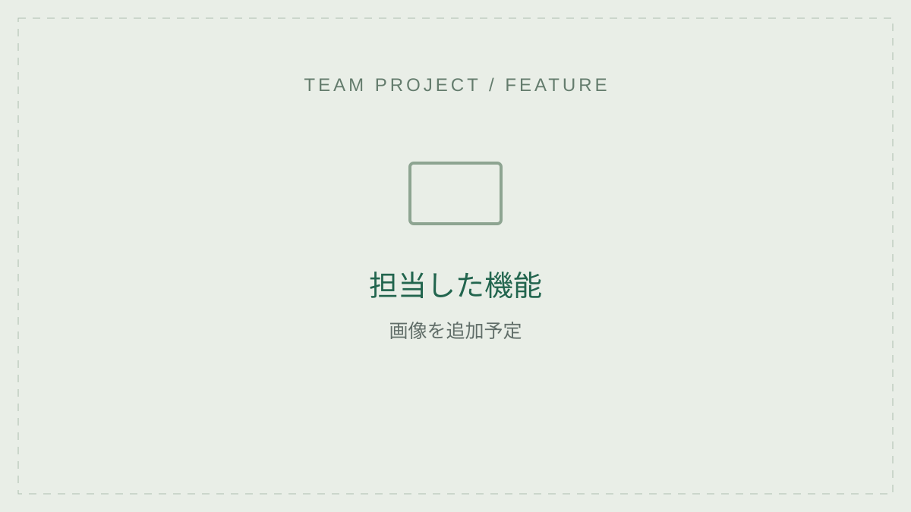

1 / 3
TEAM PROJECT / 01
作品名を追記
作品のジャンル、遊び方、特徴を簡潔に紹介します。
- お題・テーマ
- 追記予定
- 担当箇所
- 自分が担当した機能・役割を追記
- 制作期間・人数
- 追記予定
- 使用技術
- 追記予定
挑戦したこと
実装した内容と工夫した点、その結果を追記します。チーム全体の成果と、自分の担当範囲を分けて紹介します。
実装の詳細・改善したこと
課題と対応方法、動作確認で分かったことを記載します。
動画やソースコードを公開できる場合は、ここにリンクを追加します。